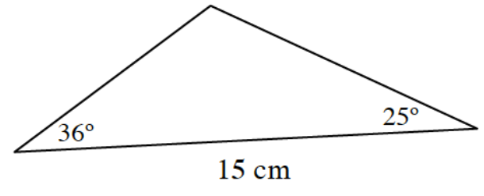
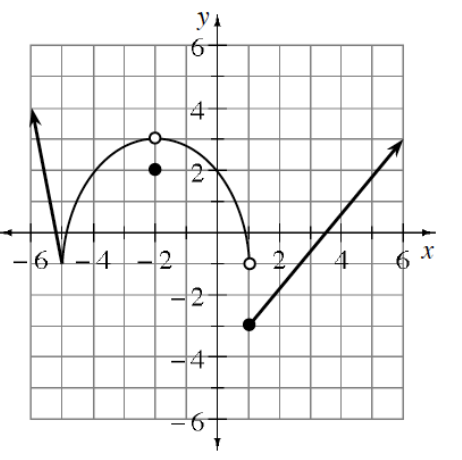

Represent each system of equations below with matrices. Solve the system in part (c).
\(\begin{aligned}p+2q&=7\\3p+4q&=11\end{aligned}\)
\(\begin{aligned}4m-5n&=-2\\-3m+4n&=9\end{aligned}\)
\(\begin{aligned}4x-y+z&=-5\\2x+2y+3z&=10\\5x-2y+6z&=1\end{aligned}\)
\(\begin{aligned}7w-3x+2z&=41\\-2w+x-z&=-1\\w+y-2z&=12\\x-3z&=1\end{aligned}\)
Calculate the area of a parallelogram defined by the vectors \((-4,5)\) and \((6,-15)\).
\(xy^2-2x+2y=1\)
What is the value of \(y\) when \(x=-1\)?
Solve the equation for \(y\).
Add the fractions and simplify: \(\frac{1}{1-\sin(\theta)}-\frac{1}{1+\sin(\theta)}\)
Solve for \(x\) on the indicated domain.
\(2\sin(x)+\sqrt{2}=0,\ 0\leq x<2\pi\)
\(\cos(x)(2\sin(x)+\sqrt{2})=0,\ 0\leq x<2\pi\)
\(\cos(x)(2\sin(x)+\sqrt{2})=0\)
A car travels \(45\) mph for \(3\) hours and \(55\) mph for the next two hours.
Draw a speed vs. time graph of the situation.
What was the car's average velocity during this trip?
What is the area under your curve from \(0\leq h\leq 5\)? What does it represent in this situation?
Calculate the area of the triangle shown.

This problem is a checkpoint for evaluating limits from graphs and tables.
Use the graph of the piecewise-defined function, \(f\), to evaluate each of the limits below.

\(\lim\limits_{x\to -5}f(x)\)
\(\lim\limits_{x\to -2^-}f(x)\)
\(\lim\limits_{x\to 1}f(x)\)
\(\lim\limits_{x\to 1^+}f(x)\)
Let \(f(x)=\frac{4^x-3^x}{x}\). Copy and complete the table of values below to estimate the value of \(\lim\limits_{x\to 0}\frac{4^x-3^x}{x}\).
| \(x\) | \(-0.01\) | \(-0.001\) | \(-0.0001\) | \(0.0001\) | \(0.001\) | \(0.01\) |
|---|---|---|---|---|---|---|
| \(f(x)\) |
Juanita wants to solve the following problem using matrices, but it is not sure how. The cost of two pencils, two pens, and two erasers is \(\$2.46\). The cost of two pencils, five pens, and one eraser is \(\$4.38\). The cost of one pencil, one pen, and two erasers is \(\$1.38\). What is the cost of each item?
Explain how she should do.
Solve this problem.
Solve for \(y\) in terms of \(x\) if \(\frac{1}{x}+\frac{2}{y}=5\).
Let \(M=\begin{bmatrix}1 & 0\\-1 & 2\end{bmatrix}\) and \(N=\begin{bmatrix}a & b\\c & d\end{bmatrix}\).
Calculate \(MN\).
For what values of \(a,b,c,\) and \(d\) does \(MN=I\)?
Use the result of part (b) to write the matrix \(M^{-1}\).
Solve each of the following equations, where \(0\leq \theta < 2\pi\).
\(\csc(\theta)=-2\)
\(\cos(\theta)=-\frac{\sqrt{3}}{2}\)
Calculate the exact value of \(\sec(a+b)\) where \(\cos(a)=\frac{3}{4}\), \(a\) is in Quadrant IV, \(\tan(b)=-\frac{12}{5}\), and \(b\) is in Quadrant III. Hint: Calculate \(\cos(a+b)\).
This problem is a checkpoint for average and instantaneous rates of change. Let \(f(x)=3x^2-4\).
Calculate the average rate of change from \(x=10\) to \(x=12\).
Calculate the average rate of change from \(x=11\) to \(x=11+h\).
Evaluate the expression in part (b) as \(h\to 0\). What does this tell you about the function at \(x=11\)?
Calculate the instantaneous rate of change at \(x=11\).
Solve for the exact value of \(x\) without using a calculator.
\(3e^x-5=13\)
\(\ln(x+1)=3.2\)
A woman cycles \(10\) mi/h faster than she runs. Every morning she cycles \(10\) miles and runs \(2.25\) miles for a total of \(1\) hour of exercise. How fast does she run?